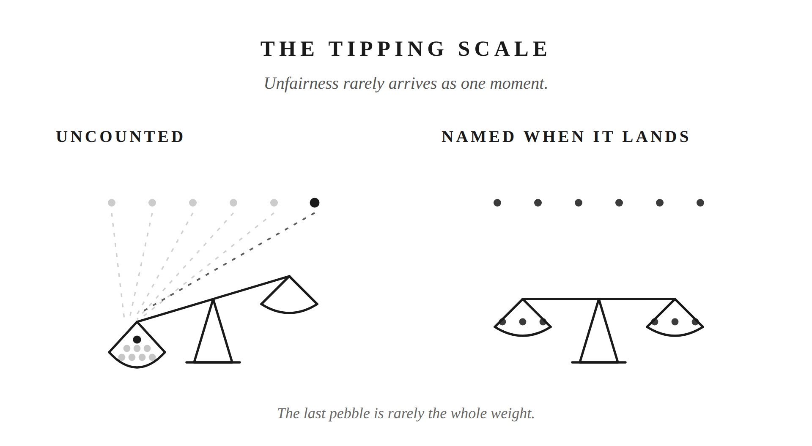

The last chapter took the private tally apart. This one is about what the tally could never read, the part underneath it. And what to do once you feel it break the surface.
What lands on you as “this is unfair” almost never arrives as one clean grievance. It’s built out of many smaller things you didn’t count at the time because each one was too small to name. A critique that stung a little more than she meant it to. A weekend of work she didn’t seem to notice. A morning where you swallowed something to keep the peace. Individually, each one is nothing. Together, over weeks, they add weight to an invisible scale. One day something small tips it, and the feeling that arrives seems to come from nowhere.
That’s the first thing to see clearly. What feels sudden almost never is. You just notice it late. The small stuff underneath has been landing for a long time before it ever reaches the surface.
The shape of what’s underneath varies from marriage to marriage, more than most books admit. You might be in the traditional configuration: not the earner, or earning less, doing more of the visible home tasks. That work goes uncredited because she’s measuring by a different standard than you are.
Or it looks the opposite for you. You hold the primary income, or the harder job, and what you contribute goes invisible because it happens offstage. Its output, a mortgage payment, insurance, retirement money that doesn’t exist yet, doesn’t visually compete with a clean kitchen.
Or you’re both working. You do more of the physical household work. She owns a whole different domain that’s just as demanding but unseen: the kids’ schooling, their activities, the medical appointments. You don’t carry that channel’s mental load. She does. That third shape isn’t clean at all for you. It’s task volume and recognition tangled together at once.
You know which shape yours is. What matters is that the mechanism is the same in all three. Many small things you didn’t count at the time, and no one else counting them either.
Sooner or later she’ll name one. She’ll say the thing she’s been carrying. You’ll feel the shape of an accusation, and everything in you will want to defend or counter. Before you do either, run one question at the moment before you speak.
Marcus Aurelius has a passage in Meditations, Book 5, section 28. Most men read it for a different reason, but it’s the right tool here. He’s writing to himself about how to think about a person whose fault is a small physical offense: “Art thou angry with him whose armpits stink? Art thou angry with him whose mouth smells foul? What good will this anger do thee? He has such a mouth, he has such armpits: it is necessary that such an emanation must come from such things.” The point isn’t the smell. The point is that anger is the wrong response to a fact. The honest thing to do is check whether the fact is actually real.
So when she names an unfairness, the diagnostic is a question you speak to yourself first. Is what she’s saying true, or not true?
Say it’s true, even partly, even in a shape you didn’t see until she said it out loud. If so, the work in front of you is not an apology performance. It’s a construction project: real change, in the thing you actually fix, over time she can watch you fix it. An apology by itself won’t answer what she’s actually named. Different behavior will.
Or say it isn’t true. She might be missing something she hasn’t yet looked at, seeing only her side because that’s the side she can see. She’s very likely not being cruel. She’s being unreflective, the same way you have been unreflective about her side a hundred times over. That calls for a quieter response than counterattack, and a slower one than a competing list. A plain sentence, said without heat: this is what I don’t think you’re seeing. Marcus’s rule holds either way. Anger at what emanates from another person’s blind spot is a waste. The correction, if it comes, comes without heat.
The harder direction is when the felt unfairness is your own. You’ve done real work. It met real needs. Nobody in the house seems to have noticed. You feel the pull to say something, or worse, to say nothing while quietly running a count.
Before either belief does its work, take the pause you already know how to take. The moment goes back to Chapter 1: three seconds, then the question. Am I being the best husband I can be right now, uncredited or not? The pause doesn’t make the feeling disappear. It just keeps it from turning into a pointed comment, a flat tone, a door closed a little harder than it needed to be, before you’ve had the chance to answer what’s actually underneath it.
Once you’ve taken the pause, you already have the belief-level tool for what’s underneath. You had it last chapter. Marcus Aurelius, closing Chapter 7, told you not to reach for a third thing beyond the doing and the need it met. No credit, no return, no ledger entry. That was one Stoic naming the mechanism from one angle. What follows is another, making the same case from a different angle, so you carry the argument in stereo.
Seneca spends Letter 81 of his Letters to Lucilius on this exact question, on benefits and what the giver is actually owed. His answer: “The reward for all the virtues lies in the virtues themselves… the wages of a good deed is to have done it.” That’s the whole transaction. You did the thing. It met a need. It landed. The payment already cleared, at the moment of the doing. Her active gratitude for it belongs to a separate transaction. Wanting her to see it is human. Requiring her to see it, so your own sense of yourself can settle, hands her a lever nobody should be holding on your behalf.
Two philosophers, one point, coming at you from two directions on purpose: the finished good deed doesn’t need a receipt.
There’s an asymmetry inside a marriage worth naming here. Grievance is contagious. The moment one of you names a felt injustice, the other opens a competing ledger. Who’s more tired. Who’s given up more. Who’s been let down worse. Neither of you can hear the other, because you’re each defending a different account. Gratitude has never once done that. Nobody has ever answered a partner’s grievance with a competing round of thanks, racing to prove they’re more served, more fortunate. The one-way traffic tells you which of the two is safe to keep in the house.
Which brings the last chapter’s closing arithmetic back around. Give sixty, expect forty. Not because the math is fair, but because expecting less means you aren’t the one keeping a quiet count in the first place. Genuinely grateful for what your wife carries, most of which you cannot see, you’re not the man who wakes up feeling shortchanged.
The next chapter looks at what happens when you stay quiet and expect something back.
Keep gratitude standing in the doorway, and nothing quiet ever gets the chance to build a case against her.

Putting into Practice
Mechanism: The Tipping Scale
Conversation sentence: Unfairness rarely arrives as one moment. It’s small things you never counted, tipping quietly until you finally feel the weight.
Felt unfairness is almost never one clean grievance. It’s dozens of small, uncounted things tipping an invisible scale until it breaks the surface, and once it does, the right response depends on direction: Marcus Aurelius’s true-or-not-true test when it’s her complaint landing on you, and Seneca’s teaching that a good deed pays itself the moment it’s done when the feeling is your own.
Lesson: Two Stoic tools for two directions. When her complaint lands on you, Marcus Aurelius’s test: is what she’s naming true, or not? When the uncredited work is yours, Seneca’s: the deed already paid itself, the moment it was done. No third thing to wait for.
Challenge: What feels sudden almost never is. The small stuff, an uncredited weekend, a comment that stung more than she meant, a morning you swallowed something, has usually been landing for weeks before the day it finally breaks the surface.